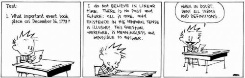

--Alan Watts
"If the past cannot prevent you from being present now, what power does it have?"
--Eckhart Tolle
"Therapists have told patients that, "The body remembers what the mind forgets,"
and that memories and traumas are recorded in cellular DNA.
Absolutely no scientific evidence supports these notions."
--Aaron T. Beck, MD
I remember playing at the beach at 5, wearing my cousin’s red bathing suit. I remember being bullied. I remember painting with my grandfather, getting a D in every high school class just to piss off my mother, being jealous of my friend’s normal family. I remember panic attacks in college, dancing in the school play, singing “O Holy Night” for auditorium. I remember depression, enlightenment experiences, fights with boyfriends, money fears, triumphs and pats on the back, watching my grandmother bake.
Memories. I’ve got ‘em. You do too.
We have a past, a history. And the memories to prove it.
Because the past did happen, right? I mean, look, there are even photos- here’s a little girl at a beach wearing a red bathing suit.
So what are they, these memories, these provers of reality and past?
Well, they’re images. We say, “I was at the beach,” and mentally see the beach.
We see it now. Sitting in a chair at home, thinking about the beach.
That is not a real beach. We can’t swim there. That’s mental pixels.
Even “real” proofs of the past, like photographs or videos, are also images. They are also not the past, not the beach, not our parents, not soldiers, not 1910.
They are stand-ins, indications, representations, of a past.
So where's the real thing?
Oh dear. Maybe we're hallucinating it? I mean, per Mr. Webster: “Hallucinate: to experience a seemingly real perception of something not actually present.”
Hmmmm. Apparently all of us are indeed mass-hallucinating and buying into images of something not actually present, as if they are real.
Because the past itself does not exist. It’s a picture.
Otherwise, if the past is a real thing, where did it go, where is it now? What does it look like when it shows up for a visit?
It seems humans hallucinate all the time. Even the NOW, that much-vaunted present, is also a hallucination.
But that may be harder to see.
It's just that we don’t think of the present as formative. Whereas almost everyone believes the past created us and made us who we are.
Even though whatever happened, whatever we lived through, was only known by colors and shapes appearing in our own eyeballs, sounds falling on our own ears, sensations occurring in our ownfingertips.
Experiences depending on us. Happening to us alone. Here in that moment (if at all) and then gone.
Nonexistent unless we perceive it.
And then, from these personal perceptions, we make inferences, meaning, convictions and absolute certainties of reality.
And of ourselves.
So naturally we're going to hold onto a few of those. We're going to call them memories, and the past, and trauma, and life story. We're going to tell those stories as explanations of things happening today.
And we're all going to pretend these past experiences are here still, held in us somewhere, stuck in there forever, directing current life like some kind of miniature mad-person in the forehead, waiting to come out at the most inconvenient times later.
“It was terrible and it made me who I am today.” “I still have dreams about my parents- they still affect me today, though they are long gone.”
Creating the Me.
Perceptions and memories and histories are how we prove we exist.
As a person.
Humans reify hallucinations in order to verify who we are. A whole person, a whole Me, is built around them.
Because without a past, what’s left? What are we?
Could it be nothing?
Oh dear.
Better to put the past on a pedestal, honor it, study it, enshrine it with memory, call it reality, and think it means something.
And then hold on tight.
Never ever release it.
Even if it hurts.
Ok but ugh, for crying out loud, Mind-Tickler, who cares? What good does all this theoretical blather about the past and memory and hallucination do for anyone anyway? No one needs this.
Yes of course that’s true.
It’s true we have to live in this world. We can’t wipe out stories of little girls in red bathing suits.
We can’t wipe out Hitler and walks on the moon and radiation and dinosaurs and yesterday and deceased family members.
The illusion must continue. Hallucinations are required. It is necessary to buy in.
There really is no alternative.
It’s just that untethering from the usual certainties, even just a little, can bring surprises.
If we are willing to consider that, “Once upon a time” is not reality, never has been what we are, and hasn’t necessarily even created what we are-
because really how can any image create a person- especially a person later-
well then who knows? The next realization might be that we’re not weighted down by what we think we are, at all.
We might discover that if we’re only story, then we’re nothing at all.
Which is something a lot of Mind-tickler readers really want to understand.
The past is an imaginary leash.
Unchain from that anchor, with all its trauma, suffering, and heaviness pinning the self down,
And there may be nothing left to hold the usual balloon of Me
From floating free.
Which just might be something,
if we can remember,
to hold onto
Lightly.
“We think that the world is limited and explained by its past. We tend to think that what happened in the past determines what is going to happen next, and we do not see that it is exactly the other way around! What is always the source of the world is the present; the past doesn't explain a thing. The past trails behind the present like the wake of a ship and eventually disappears.”
--Alan Watts
"There is neither past nor future. There is only the present. Yesterday was the present to you when you experienced it, and tomorrow will be also the present when you experience it. Therefore, experience takes place only in the present, and beyond experience nothing exists."
--Ramana Maharshi
"The self cannot be given up as long as
One is self indulgent.
One who is bound to his tendencies,
To his past, his viewpoint,
To his commitments to things in the world,
To his acceptance of life in separation,
Cannot realize,
Cannot recognize."
--wu'hsin
